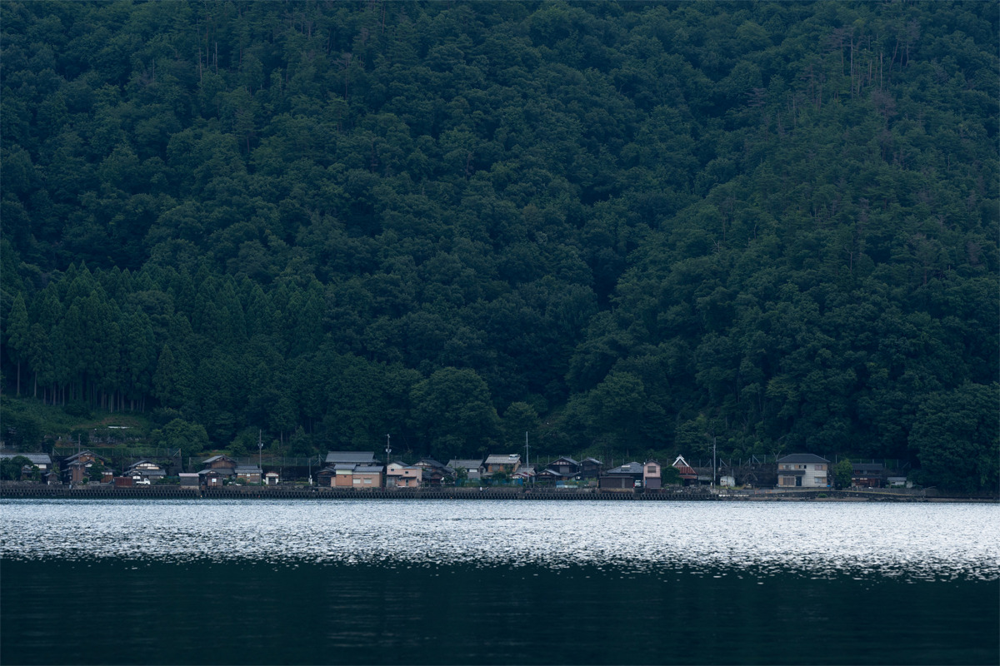
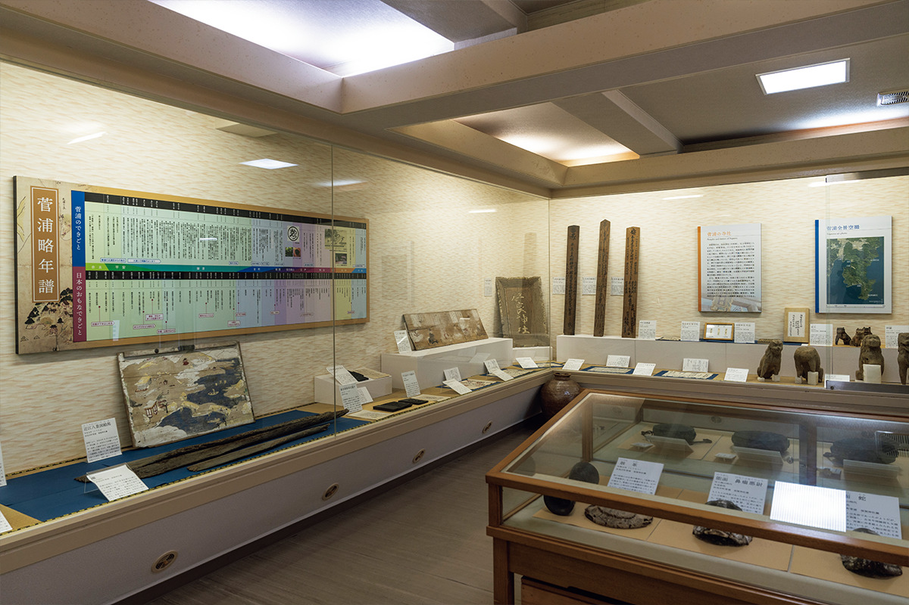
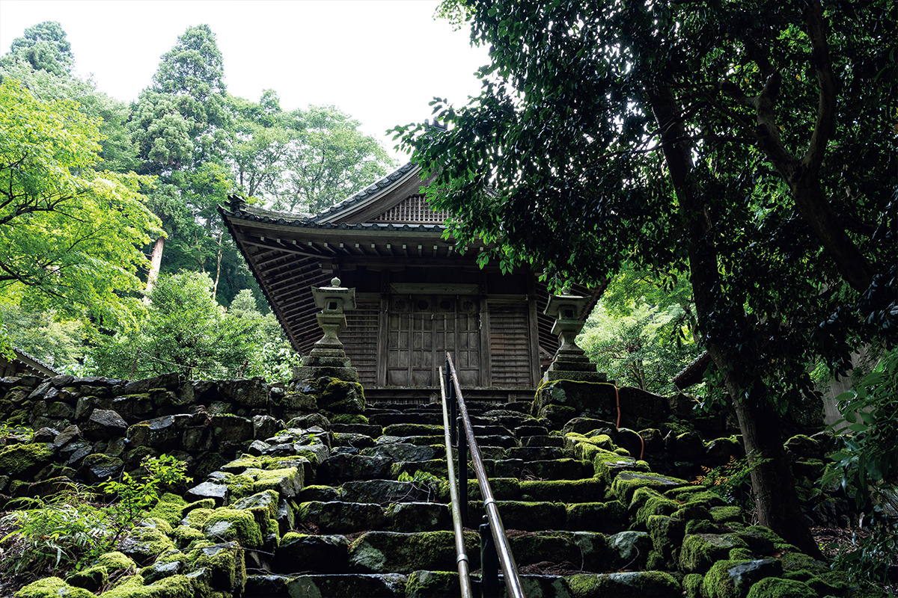
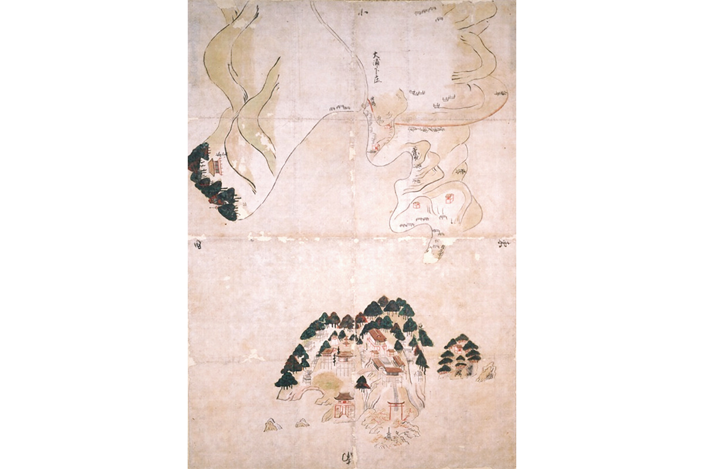
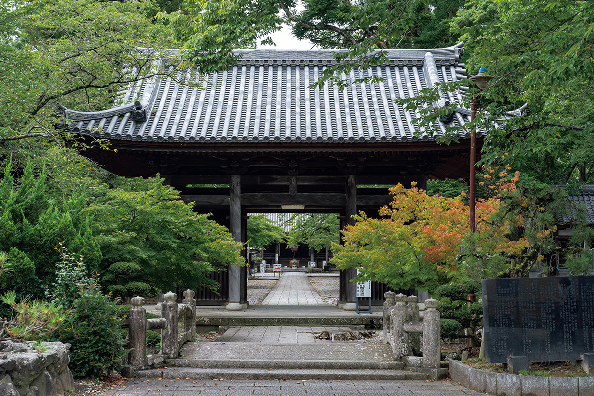
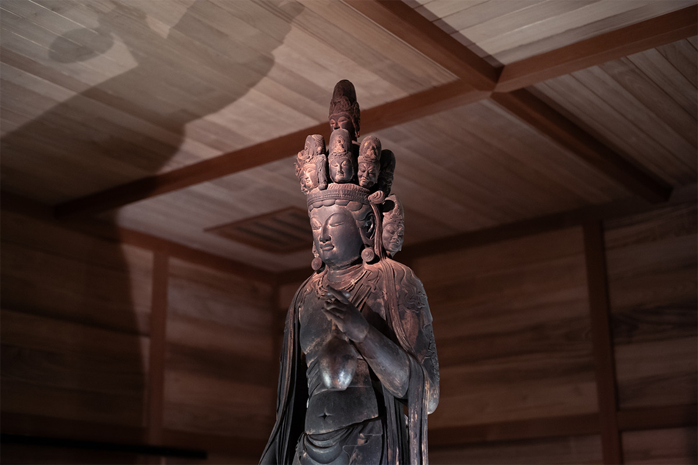
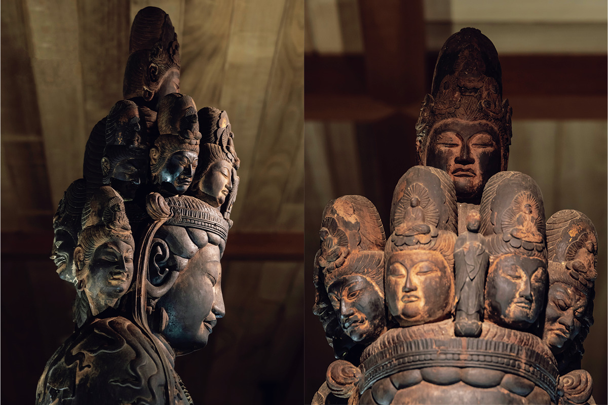
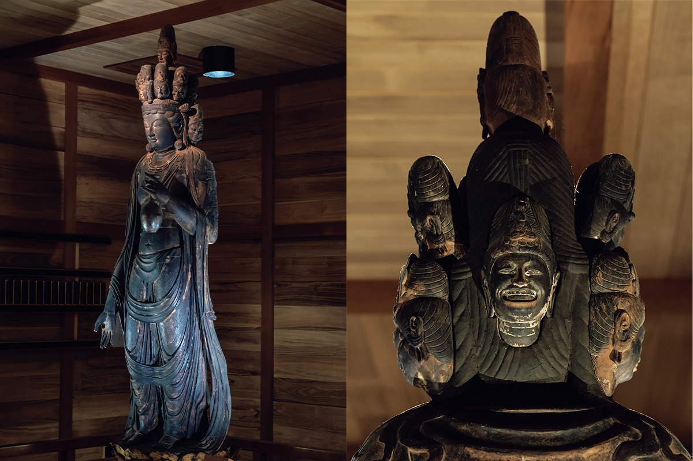
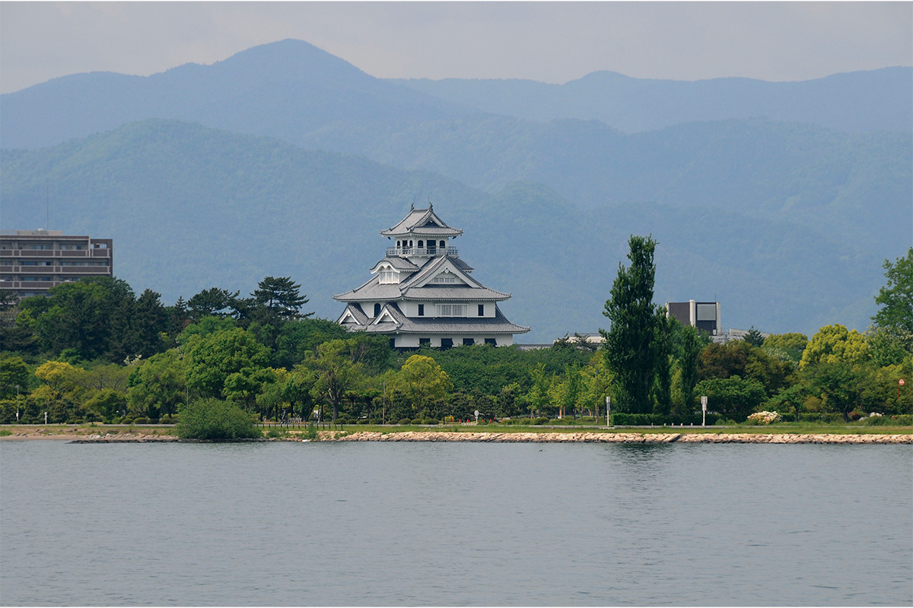

Префектура Сига · Нагахама · история
Сугаура и Нагахама: скрытая деревня на озере Бива и край одиннадцатиликих Каннон

Писательница Масако Сирасу называла деревню Сугаура «скрытой деревней», а город Нагахама давно зовут «краем Каннон». Обе дороги ведут на север озера Бива, туда, где история края Оми сохранилась лучше всего.
Деревня
Сугаура: скрытая деревня на краю озера
Северную часть озера Бива называют Оку-Бива, «глубокая Бива». Горы здесь подступают к самой воде, и берег напоминает скандинавские фьорды. В озеро вдаётся мыс Цудзураодзаки, и на его западной стороне лежит деревня Сугаура.
Вдоль тихого берега в воде отражаются лесистые склоны, мелкая волна набегает на камни. Вход в деревню отмечают крытые соломой ворота на четырёх опорах. Они стоят здесь со Средних веков и когда-то отделяли деревню от внешнего мира. За ними открывается спокойная бухта, и пейзаж этот вызывает тоску по старой Японии. В 2014 году прибрежный ландшафт Сугауры признали важным культурным ландшафтом страны: жизнь и промыслы деревни до сих пор устроены так, как подсказывают горы за спиной и озеро впереди.

В Средние века Сугаура стала образцом «сосон», самоуправляемой сельской общины. Жители сами писали деревенские законы и около 150 лет спорили о границах земель с соседним поместьем Оура. Из этого опыта выросла собственная развитая система самоуправления, которая не подчинялась внешней власти. Дух независимости и традиции общины живы здесь до сих пор.
С деревней связана и легенда об императоре Дзюннине (733–765). Он потерял трон после поражения в мятеже Осикацу Эми, могущественного придворного, на стороне которого стоял. По преданию, в 759 году император построил здесь дворец Хора. За святилищем Суга, которое почитают как покровителя деревни, на склоне сохранилось сооружение в форме лодки: его считают гробницей императора.

Масако Сирасу (1910–1998), эссеистка, всю жизнь любившая край Оми, была очарована этими преданиями и глубокой верой местных жителей. Она с уважением описала Сугауру в книге «Скрытые деревни». Раньше отсюда можно было выбраться только через горы или на лодке по озеру. Сегодня по этому уединённому месту можно просто гулять, и старая сельская Япония видна здесь во всей полноте.

Краеведческий музей Сугауры (деревня Сугаура)
- Адрес
- префектура Сига, Нагахама, Ниси-Адзаи, Сугаура
- Телефон
- +81 749-53-2650 (туристическая ассоциация Нагахамы)
- Часы работы
- 10:00–16:00
- Выходные
- открыт по воскресеньям с апреля по ноябрь; в другие дни группы от двух человек по записи не позднее чем за три дня; летом (с 20 июля до конца августа) закрыт
- Цены / Вход
- взрослые 300 иен, младшие школьники и дети младше 100 иен
Каннон
Нагахама: край одиннадцатиликих Каннон

Сугаура входит в город Нагахама. Буддийская культура расцвела здесь примерно с эпохи Хэйан, но войны XV–XVI веков сильно её изменили: многие деревенские храмы остались без монахов или совсем опустели. Уцелевшие статуи Каннон, больше всего в районе Такацуки, жители взяли к себе как деревенских покровителей. Такое случается в Японии редко: статуи веками берегут не монастыри, а сами крестьяне, и эта забота до сих пор часть повседневной жизни. Поэтому Нагахаму и называют «краем Каннон».

Император Сёму (701–756) правил в VIII веке и много сделал для распространения буддизма в стране. Монах Тайтё (682–767) прославился как основатель культа горы Хакусан. С их именами и связывают начало здешнего почитания одиннадцатиликой Каннон.
Масако Сирасу назвала статую из зала Догандзи, который относится к храму Когэндзи, «самой красивой в Оми». Осмотр этой статуи стоил 500 иен в 2024 году. Всего в городе, говорят, больше 130 статуй Каннон, и если объехать их, становится понятно, как здесь устроена вера: она выходит за рамки школ буддизма и готова принять всех.



Зал Каннон Догандзи (храм Когэндзи)
- Адрес
- префектура Сига, Нагахама, Такацуки, Догандзи, 50
- Телефон
- +81 749-85-2632 (общество сохранения зала Каннон Догандзи)
- Часы работы
- 9:00–17:00 (зимой до 16:00)
- Цены / Вход
- осмотр статуи 500 иен, младшие школьники и дети младше бесплатно
Замок
Замок Нагахама
В конце эпохи Сэнгоку в Нагахаме правил Хидэёси Хасиба (1537–1598), позднее известный как Хидэёси Тоётоми, полководец, который объединил Японию после долгих междоусобных войн. Его замок восстановили, и внутри теперь работает исторический музей.

Фото: Садахо Найто, Роберт Иппэй.